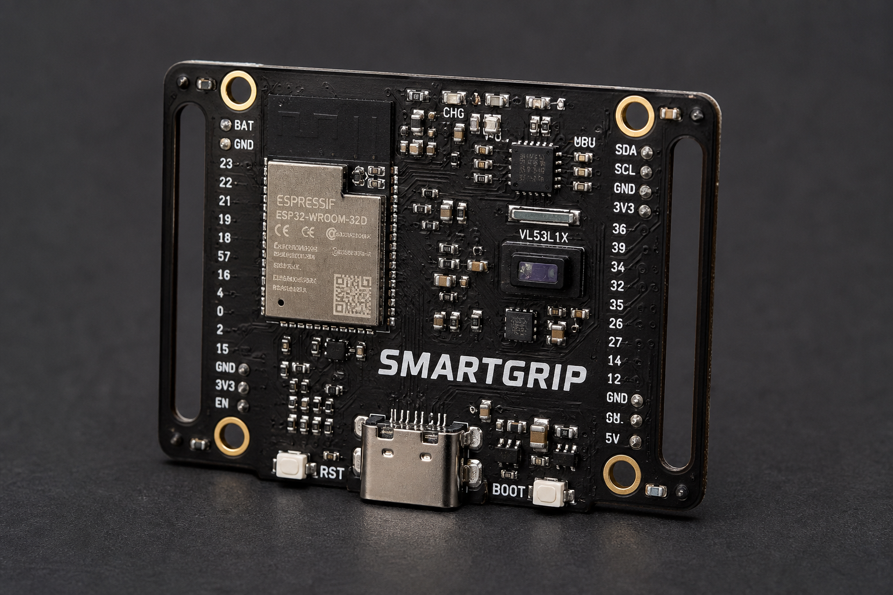
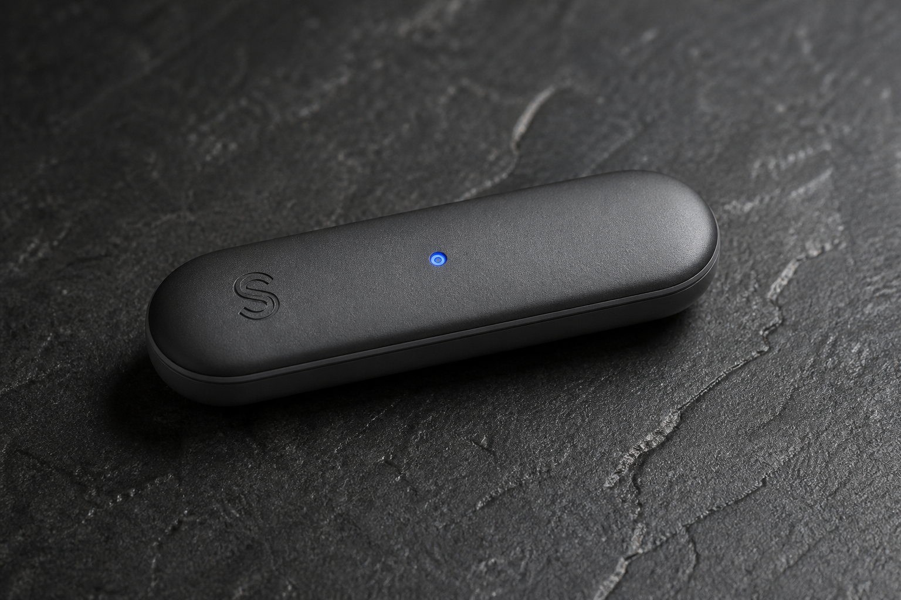

1–2 · Skin
Wrap and foam keep the handle familiar. Electronics must not print through the palm.
Hardware object / Functional prototype
Before the capsule disappears inside a handle, the system has to prove it can collect useful tennis motion. The first electronics object is a compact IMU tracker — the same visual language as a Tracer wearable: a real assembled PCB, strap slots, a dense top side, a cell on the back.

Specification · functional board
The functional prototype can ride a velcro strap on the throat or handle while algorithms are still loud and honest. The form prototype later hides a slimmer PCB in the butt.
| Compute / radio | ESP32-class MCU, BLE 4.2 / 5, 4 MB flash class |
|---|---|
| IMU | 6-axis MEMS, accel ±2 to ±16 g, gyro ±125 to ±2000 dps |
| Grip interface | FPC / analog front-end for multi-zone pressure (capsule revision) |
| Power | Li-ion / Li-Po, on-board charge, 3.3 V LDO |
| Mass target | ~20 g including early strap hardware |
| Capsule target | 60–80 × 15–20 × 8–12 mm, verify per handle cavity |
| Endurance intent | One full training block; 10+ h is a product goal after duty-cycle work |
| Mounting | Strap slots and M2 holes on the lab board; ABS holder in the handle |

Capsule revision
Industrial language: slender capsule, radiused ends, matte graphite, one LED, no proud edges. Length about 70 mm, width 18 mm, thickness 10 mm. The PCB inside is a green strip: pressure connector, IMU, MCU, memory, antenna, cell.
Blue — Connected


Mechanical stack
Outside to inside: grip wrap, shock foam, flexible pressure sheet, electronics core, ABS holder, silicone seal, butt cap. Centered mass is a balance decision, not a packaging leftover.

Wrap and foam keep the handle familiar. Electronics must not print through the palm.
Gold-trace flex for zones; rigid module for IMU, compute, and energy.
ABS chassis, seal, replaceable cap. Nothing loose in a vibration environment.

Cutaway
A good engineering report does not pretend every frame accepts the same brick. Cavity maps, balance-point shift, and a removable module are first-class requirements: lightweight, compact, durable, comfortable, safe, replaceable.
How the two prototypes split the risk